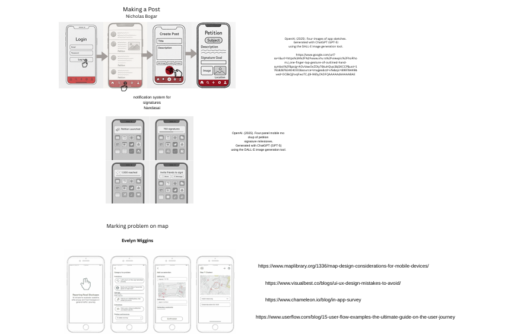

Algorithmic Design Final Project

Brief description of the repo
Problem Statement

USC students need a way to conveniently call attention to/report problems regarding campus or any other university-related problems, as there is no current streamlined method.
Affinity Diagram

The planning for a reporting app is summed up in this paper, with an emphasis on the app's design and intended functions. Important things include making sure the software can stop repression and putting in place a suitable moderation system to handle the risk that users would treat it like social media.
Sketches
The designs depict the app's two key user flows: creating a post (a petition with a signature goal) and marking a problem on a map. The posting flow contains screens for logging in and creating posts, as well as a signature notification system for tracking milestones.
Contact |
Evelyn Wiggins 803-915-1310 evelyngw@email.sc.edu |
Profile Summary |
Analytical and detail-oriented technology professional with strong communication skills, advanced mathematical proficiency, and expertise in computer programming. |
Skills |
Client Relations Operating Systems Adaptability Software Proficiency Excellent Communicator Good Team Player |
Education |
High School Diploma River Bluff High School, Lexington, SC Academic Excellence in Mathematics, Science, and Computing — 4.3 GPA 2019 – 2023 Bachelor of Science, Computer Engineering University of South Carolina, Columbia, SC 2023 – Present Anticipated Graduation: May 2027 |
Work Experience & Internship |
Ubreakifix, Lexington, SC Jan 2022 – May 2022 • Communicated effectively with faculty and staff and accepted critiques for improvement. • Interacted with customers by phone, email, and in person to provide information. • Analyzed problems and collaborated with teams to develop solutions. • Explored new technologies to streamline processes. • Worked with senior management on initiatives to build confidence. South Carolina State House — Tour Guide, Columbia, SC July 2024 – Present • Guided visitors through the building, explaining history, architecture, and legislative functions. • Ensured meaningful, informative experiences for all visitors. |